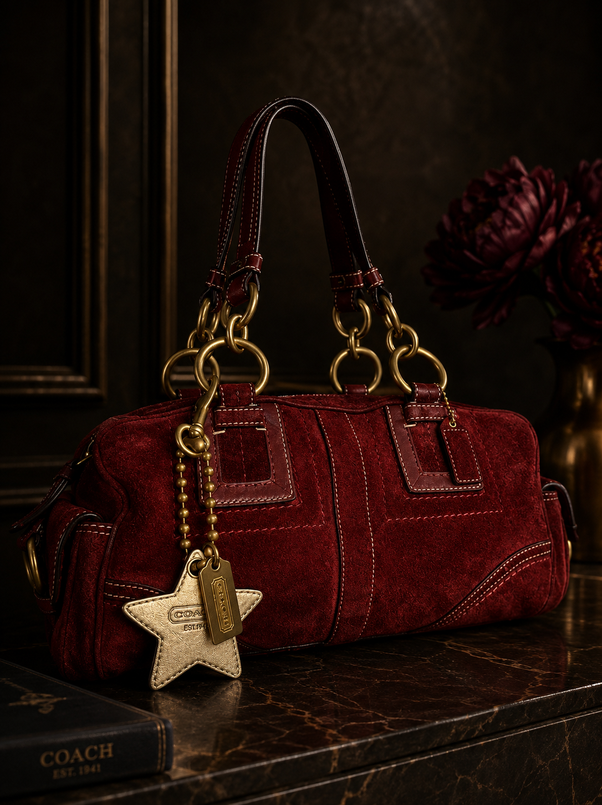

£950
Coach
Featured Piece
Coach — Est. 1941
Red Suede
Hamptons Satchel
A statement piece in deep crimson suede that commands any room it enters. Finished with substantial antique brass chain-link hardware, a beaded ball-chain with Coach star charm, and contrast cream stitching throughout. The double braided-ring handles sit at a confident height — this is a bag built as much for presence as it is for function. Rare colourway. Near-mint condition.
£950
Buy This Bag